2026年北京市大兴区初中学业水平考试化学试题 原卷解析
2026年北京市初中学业水平考试
化学试卷（大兴卷）
考生须知 | 1.本试卷共8页，共两部分，共32题，满分60分。考试时间70分钟。 2.在试卷和答题卡上准确填写学校、班级、姓名和准考证号。 3.试题答案一律填涂或书写在答题卡上，在试卷上作答无效。 4.在答题卡上，选择题用2B铅笔作答，其他试题用黑色字迹签字笔作答。 |
可能用到的相对原子质量：H 1 C 12 O 16 Mg 24 Cl 35.5
第一部分
本部分共25题，每题1分，共25分。在每题列出的四个选项中，选出最符合题目要求的一项。
空气和水是人类赖以生存的自然资源。回答1～5题。
1. 空气的成分中，体积分数约占78%的是
A. 氮气B. 氧气C. 二氧化碳D. 稀有气体
【答案】A
【解析】
【详解】按空气体积分数计，氮气约占78%、氧气约占21%、稀有气体约占0.94%、二氧化碳约占0.03%，故选A。
2. 下列不属于空气质量日报中监测的物质是
A.  B. C.
B. C.  D. CO
D. CO
【答案】C
【解析】
【详解】二氧化氮、二氧化硫均能与水反应生成酸性物质，均会导致酸雨的发生，一氧化碳有毒，它们均属于空气污染物，二氧化碳是空气的组成成分之一，不是我国空气质量日报中强制监测的污染物。
3. 下列物质中，含有氧分子的是
A. 空气B.  C. D.
C. D.
【答案】A
【解析】
【详解】氧分子的化学式为 ，仅氧气单质或含有氧气的混合物中才存在氧分子。、、均为化合物，它们的分子中只含有氧原子，不存在独立的氧分子，空气是包含氧气的混合物，主要成分是氮气和氧气，因此含有氧分子，故选A。
，仅氧气单质或含有氧气的混合物中才存在氧分子。、、均为化合物，它们的分子中只含有氧原子，不存在独立的氧分子，空气是包含氧气的混合物，主要成分是氮气和氧气，因此含有氧分子，故选A。
4. 下列各种水中，属于纯净物的是
A. 蒸馏水B. 矿泉水C. 海水D. 雨水
【答案】A
【解析】
【详解】A、蒸馏水是由水一种物质组成的，属于纯净物．故选项正确；
B、矿泉水中含有水和溶于水的矿物质，属于混合物，故选项错误；
C、海水中含有水、氯化钠等物质，属于混合物，故选项错误；
D、雨水中有可溶性杂质和不溶性杂质，属于混合物，故选项错误；
故选A。
5. 下列做法中，不利于保护水资源的是
A. 使用节水型器具B. 生活污水任意排放
C. 合理使用农药和化肥D. 工业废水处理达标后排放
【答案】B
【解析】
【详解】A、使用节水型器具可减少水资源浪费，有利于保护水资源。
B、生活污水任意排放会污染水体，破坏水资源环境，不利于保护水资源。
C、合理使用农药和化肥可减少水体污染，有利于保护水资源。
D、工业废水处理达标后排放可避免水体污染，有利于保护水资源。
故选B。
化学与生活、生产息息相关。回答6～11题。
6. 肉豆浆是襄阳人早餐的标配，豆浆的制作流程中主要涉及化学变化的是
A. 冷水泡豆B. 磨豆制浆C. 过滤豆渣D. 燃柴煮浆
【答案】D
【解析】
【详解】A、冷水泡豆的过程中，只是形状发生变化，没有新物质生成，属于物理变化；
B、磨豆制浆的过程中，只是形状发生变化，没有新物质生成，属于物理变化；
C、过滤豆渣的过程中，只是将不溶性固体颗粒分离出去，没有新物质生成，属于物理变化；
D、燃柴煮浆的过程中伴随着燃烧，燃烧会生成新物质如二氧化碳等，属于化学变化。
故选D。
7. 人体每日需要摄入适量的钙，这里的“钙”指的是
A. 元素B. 单质C. 分子D. 原子
【答案】A
【解析】
【详解】物质是由元素组成。人体每日需要摄入适量的钙，这里的“钙”指的是钙元素。
故选：A。
8. 下列生活用品，利用金属导电性的是
A. 铁锅B. 铜导线C. 铝箔包装纸D. 金饰品
【答案】B
【解析】
【详解】A、铁锅主要利用金属的导热性，不符合题意；
B、铜导线主要利用的是金属的导电性，符合题意；
C、铝箔包装纸主要利用的是金属的延展性和导热性，不符合题意；
D、金饰品主要利用的 是金属的延展性，不符合题意。
故选B。
9. 生产生活中离不开能源。下列不属于化石燃料的是
A. 煤B. 酒精C. 石油D. 天然气
【答案】B
【解析】
【详解】
A.煤属于三大化石燃料之一，不符合题意。
B.酒精可通过粮食发酵等人工方式制取，属于可再生能源，不属于化石燃料，符合题意。
C.石油属于三大化石燃料之一，不符合题意。
D.天然气属于三大化石燃料之一，不符合题意。
10. 切开凤梨时，能闻到清新的果香味，主要原因是
A. 分子在不断运动B. 分子的体积很小
C. 分子之间有间隔D. 分子的质量很小
【答案】A
【解析】
【详解】A.果香味的分子不断运动，扩散到空气中被人感知，正确。
B.分子体积小是分子的固有性质，但与闻到气味的现象无直接关联，错误。
C.分子间有间隔主要解释物质三态变化、体积变化等现象，和气味扩散无关，错误。
D.分子质量小是分子的固有性质，但不是闻到果香的原因，错误。
11. 泡菜发酵会产生乳酸（）。下列关于的说法不正确的是
A. 属于有机化合物B. 1个分子中含有12个原子
C. 碳、氢元素的质量比为1∶2D. 氧元素的质量分数最大
【答案】C
【解析】
【详解】A. 有机化合物是含碳元素的化合物（除碳的氧化物、碳酸、碳酸盐等少数特例），乳酸含碳元素，属于有机物，表述正确；
B. 由化学式可知，1个乳酸分子中含3个C原子、6个H原子、3个O原子共12个原子，表述正确；
C. 乳酸中碳、氢元素的质量比为：，是碳、氢的原子个数比，不是质量比，表述错误；
D. 中C、H、O元素的质量比为：，因此氧元素质量分数最大，表述正确。
实验是化学研究的基本方法。回答12～15题。
12. 下列仪器不能加热的是
A. 蒸发皿B. 量筒C. 烧杯D. 燃烧匙
【答案】B
【解析】
【分析】
【详解】A、蒸发皿可以直接加热，不符合题意；
B、量筒用于量取一定体积的液体，不能加热，符合题意；
C、烧杯不能直接加热，可垫上石棉网加热，不符合题意；
D、燃烧匙可直接加热，不符合题意。
故选B。
13. 下列物质在中燃烧，火星四射、生成黑色固体的是
A. 木炭B. 红磷C. 氢气D. 铁丝
【答案】D
【解析】
【详解】A.木炭在氧气中燃烧发出白光，生成能使澄清石灰水变浑浊的气体，不符合题干现象。
B.红磷在氧气中燃烧产生大量白烟（白色固体），不符合。
C.氢气在氧气中燃烧产生淡蓝色火焰，生成水雾，不符合。
D.铁丝在氧气中剧烈燃烧，火星四射，生成黑色固体，符合。
14. 下列操作正确的是
A. 倾倒液体B. 加热液体
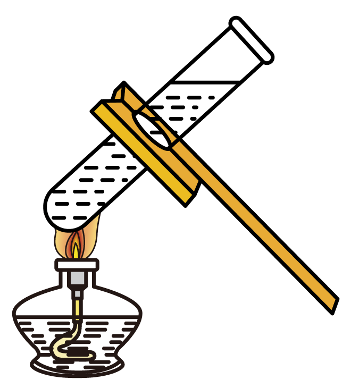
C. 读取液体体积
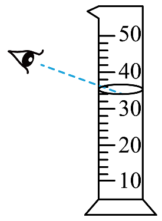
D. 稀释浓硫酸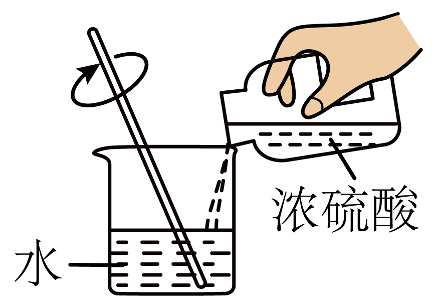
【答案】D
【解析】
【详解】A、向试管中倾倒液体药品时，瓶塞要倒放，标签要对准手心，瓶口紧挨试管口，图示操作瓶塞要没有倒放，瓶口没有紧挨试管口，错误；
B、加热液体时，用酒精灯外焰加热，且液体体积不超过试管容积的三分之一，试管夹应该夹在试管的中上部，错误；
C、量筒读数时视线要与量筒内液体的凹液面的最低处保持水平，错误；
D、浓硫酸溶于水放出大量的热，密度大于水，稀释浓硫酸时，要把浓硫酸缓缓地沿器壁注入水中，同时用玻璃棒不断搅拌，以使热量及时的扩散，一定不能把水注入浓硫酸中，正确。
故选D。
15. NaOH固体试剂瓶上应张贴的图标是
A.
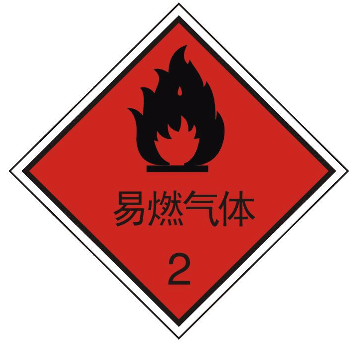
B. 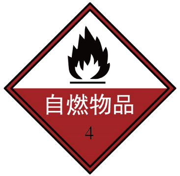
C. D. 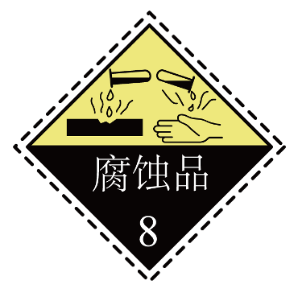
【答案】D
【解析】
【详解】A、图中所示标志是易燃气体标志，氢氧化钠固体不属于易燃气体，故A错误；
B、图中所示标志为自燃物品标志，而氢氧化钠固体不具有自燃性，则不能使用该标志，故B错误；
C、图中所示标志是爆炸品标志，氢氧化钠固体不属于爆炸品，故C错误；
D、氢氧化钠固体具有腐蚀性，其试剂瓶上应张贴的危险化学品标志是腐蚀品标志，故D正确；
故选：D。
土壤的酸碱性是土壤重要的化学性质，影响植物对营养物质的吸收。回答16～19题。
16. 下列是适宜农作物生长的土壤的范围，其中呈碱性的是
A. 花生（5.0～6.0）B. 小麦（5.5～7.0）C. 沙枣（8.0～8.7）D. 苹果（5.0～6.5）
【答案】C
【解析】
【分析】常温下溶液酸碱性和的对应关系为：呈酸性，呈中性，呈碱性。
【详解】A. 花生适宜土壤为5.0~6.0，小于7，呈酸性，错误；
B. 小麦适宜土壤为5.5~7.0，为酸性或中性，错误；
C. 沙枣适宜土壤为8.0~8.7，大于7，呈碱性，正确；
D. 苹果适宜土壤为5.0~6.5，小于7，呈酸性，错误。
17. 垃圾分类对保护土壤具有重要意义。下列属于厨余垃圾的是
A. 空易拉罐B. 空矿泉水瓶C. 西瓜皮D. 废旧报纸
【答案】C
【解析】
【分析】垃圾分类标准：厨余垃圾是易腐烂、含有机质的生活废弃物，可回收物是适宜回收再利用的生活废弃物。
【详解】A.空易拉罐属于金属制品，是可回收物，错误；
B.空矿泉水瓶属于塑料制品，是可回收物，错误；
C.西瓜皮易腐烂、富含有机质，属于厨余垃圾，正确；
D.废旧报纸属于纸质制品，是可回收物，错误。
18. 土壤酸化会造成营养元素流失、肥力下降。下列物质常用于改良酸性土壤的是
A. 熟石灰B. 烧碱C. 食盐D. 稀盐酸
【答案】A
【解析】
【详解】A. 熟石灰是氢氧化钙的俗称，碱性较弱、腐蚀性小、成本低，可与土壤中的酸发生中和反应，可用于改良酸性土壤，正确；
B. 烧碱是氢氧化钠的俗称，腐蚀性极强，易灼伤作物，不可用于改良酸性土壤，错误；
C. 食盐的主要成分是氯化钠，显中性，无法中和酸性土壤，错误；
D. 稀盐酸属于酸，会加重土壤酸性，错误。
19. 化肥对提高农作物的产量具有重要作用。下列物质能用作钾肥的是
A. K2SO4B. CO(NH2)2C. NH4ClD. Ca(H2PO4)2
【答案】A
【解析】
【详解】A、硫酸钾含钾元素，属于钾肥，符合题意；
B、尿素含氮元素，属于氮肥，不符合题意；
C、氯化铵含氮元素，属于铵态氮肥，不符合题意；
D、磷酸二氢钙含磷元素，属于磷肥，不符合题意。
故选：A。
【点睛】根据化肥的所含元素进行分类，主要是辨识化肥的元素组成中氮、磷、钾元素解题。
中华优秀典籍《天工开物》中记载了很多与化学相关的技术工艺。回答20～22题。
20. 《燔石》卷中有“凡石灰经火焚炼为用”的记载。这里的“石灰”指的是石灰石。石灰石的主要成分是
A. B. C. D.
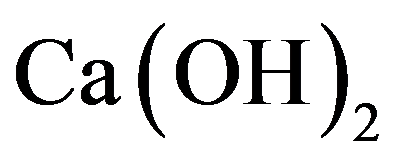
【答案】C
【解析】
【详解】石灰石的主要成分为碳酸钙，化学式为。
A.是氯化钙，不属于石灰石的成分，错误；
B.是氧化钙（俗名生石灰），是石灰石高温煅烧后的产物，不是石灰石的主要成分，错误；
C.正确；
D.是氢氧化钙（俗名熟石灰、消石灰），不属于石灰石的成分，错误；
21. 《珠玉》卷中记载了制琉璃工艺。原料琉璃石的主要成分是二氧化硅（），其中硅元素的化合价为
A. B. C. D.
【答案】B
【解析】
【详解】在化合物中各元素正负化合价的代数和为0。二氧化硅中氧元素通常显价，设硅元素的化合价为，可列计算式： ，解得，因此硅元素的化合价为。
22. 《天工开物》记载冶炼锡的主要反应原理为，其反应类型为
A. 化合反应B. 分解反应C. 置换反应D. 复分解反应
【答案】C
【解析】
【详解】根据化学方程式可知，该反应是由一种单质和一种化合物反应生成另外一种单质和化合物的反应，属于置换反应。
故选：C。
化学在促进现代科技和生产发展方面起到重要作用。回答23～25题。
23. “中国天眼”射电望远镜使用了碳化硅（SiC）。碳元素和硅元素的本质区别是
A. 质子数不同B. 相对原子质量不同
C. 中子数不同D. 最外层电子数不同
【答案】A
【解析】
【详解】A、元素是质子数相同的一类原子的总称，故碳元素和硅元素的本质区别是质子数不同，符合题意；
B、同种元素的相对原子质量可能不同，如C-12、C-14，属于同种元素，但是相对原子质量不同，不符合题意；
C、同种元素的中子数可能不同，如C-12、C-14，属于同种元素，中子数不同，不符合题意；
D、同种元素的最外层电子数可能不同，如镁原子和镁离子属于同种元素，最外层电子数不同，不符合题意。
故选A。
24. 锶原子光晶格钟属于光原子钟的一种。锶元素在元素周期表中的信息如下图，下列有关锶元素的说法不正确的是
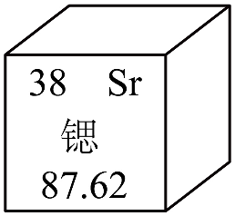
A. 原子序数是38B. 元素符号为
C. 一个锶原子核外有50个电子D. 相对原子质量是87.62
【答案】C
【解析】
【详解】A.左上角数字38为锶的原子序数，正确。
B.右上角为锶的元素符号，正确。
C.锶原子核外电子数等于原子序数=38，不是50，错误。
D.下方数字87.62为锶的相对原子质量，正确。
25. 载人航天器中可利用与 反应处理，其反应前后分子种类变化的微观示意图如下：
反应处理，其反应前后分子种类变化的微观示意图如下：
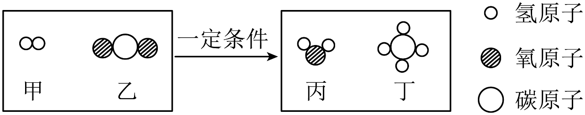
下列说法正确的是
A. 反应涉及3种氧化物
B. 反应前后氢原子个数不相等
C. 丙的相对分子质量为16
D. 参加反应的甲和乙的分子个数比为4∶1
【答案】D
【解析】
【详解】A.氧化物是由两种元素组成且其中一种为氧元素的化合物，反应中只有、两种氧化物，A错误。
B.根据质量守恒定律，化学反应前后原子种类、数目均不变，氢原子个数相等，B错误。
C.丙为，相对分子质量为，C错误。
D.配平得到反应方程式：，参加反应的甲（）和乙（）的分子个数比为，D正确。
第二部分
本部分共7题，共35分。
【实际问题的分析与解决】
26. 某校学生开展“海水资源的综合利用”项目式学习。
任务1：了解海水资源。海水中的化学资源如下图所示。
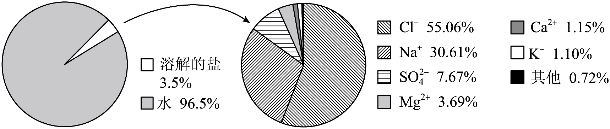
（1）海水中含量最高的金属元素是__________。
（2）写出1种存在于海水中的盐的化学式__________。
任务2：认识海水资源的综合利用。
（3）从海水中获取食盐。
①食盐的主要成分是氯化钠。氯化钠的用途有_________（写出1种即可）。
②从海水中获得的是粗盐。下面是去除粗盐中难溶性杂质的操作，正确的顺序是_________（填序号）。
A．过滤 B．溶解 C．蒸发
（4）利用海水制备金属镁。用海水提取粗盐后的盐卤（主要成分为）制备金属镁的工艺流程如下：
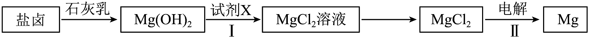
①Ⅰ中发生中和反应，加入的试剂X为_________。
②若Ⅱ中电解，计算理论上生成的质量。请补全下列计算过程_________。
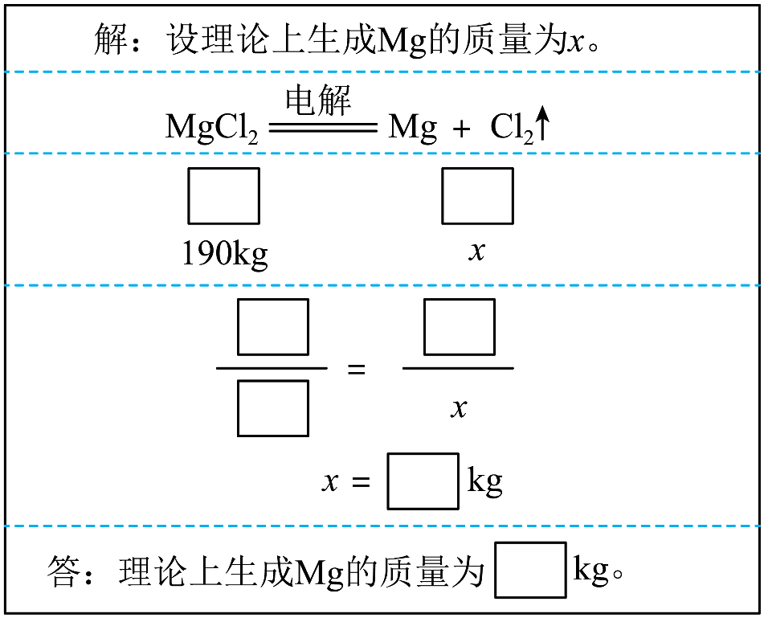
（5）利用海水制“碱”（“碱”指的是 ）。
）。
①生活在盐湖附近的人习惯“冬天捞碱”。分析表1数据，解释原因：_________。
表1 在不同温度下的溶解度
温度/℃ | 0 | 10 | 20 | 30 | 40 | 60 |
溶解度/g | 7.0 | 12.5 | 21.5 | 39.7 | 48.8 | 46.4 |
②“侯氏制碱法”制“碱”的反应之一为与 发生复分解反应，生成溶解度低的
发生复分解反应，生成溶解度低的 ，其另一种生成物为_________。
，其另一种生成物为_________。
任务3：探寻海水资源的可持续开发。
（6）请从资源节约、环境保护或生态平衡中任选一个角度，对海水资源的开发利用提出1条建议：_________。
【答案】（1）Na##钠##钠元素
（2）NaCl（合理即可）
（3） ①. 作调味品（合理即可） ②. BAC
（4） ①. 稀盐酸 ②. 解：设理论上生成Mg的质量为x
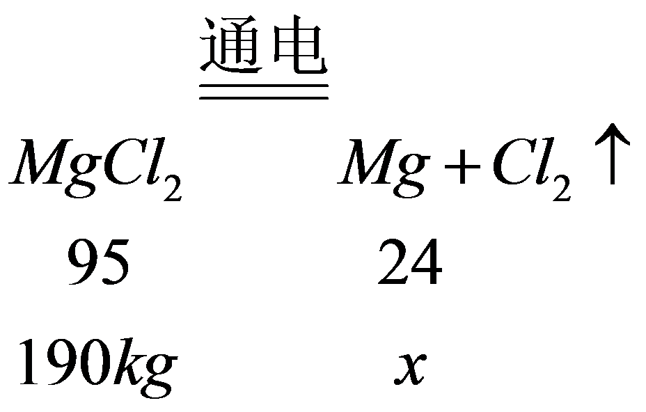
x=48kg
答：理论上生成Mg的质量为48kg
（5） ①. 碳酸钠的溶解度随温度降低明显减小，冬天温度低，碳酸钠的溶解度显著减小，碳酸钠结晶析出 ②. 氯化铵##NH4Cl
（6）在开发海水资源过程中，严格控制工业废水与开发废弃物入海，减少污染物排放，保护近海海洋生态环境（合理即可）
【解析】
【小问1详解】
略；
【小问2详解】
略；
【小问3详解】
①氯化钠有咸味，可用作调味品；
②去除粗盐中的难溶性杂质，可通过溶解、过滤，除去难溶性杂质，然后蒸发，得到精盐，故顺序是：BAC；
【小问4详解】
①中和反应是酸与碱作用生成盐和水的反应，氢氧化镁属于碱，则X属于酸，且氢氧化镁与X反应生成氯化镁，则X为稀盐酸；
②见答案；
【小问5详解】
①见答案；
②复分解反应是两种化合物互相交换成分生成另外两种化合物的反应，则碳酸氢铵与氯化钠反应生成碳酸氢钠和氯化铵，即另一种生成物是氯化铵；
【小问6详解】
见答案。
【科普阅读理解】
27. 阅读下面科普短文。
2026年北京亦庄半程马拉松上，人形机器人引来社会各界的关注。人形机器人对材料的轻量化、耐用性、精密性等要求与聚醚醚酮（PEEK）[]复合材料的性能高度契合。
PEEK凭借优异的生物相容性、较低的弹性模量和良好的化学稳定性，在骨科植入领域备受关注，但其耐磨性远逊于天然关节，制约了其在骨科植入领域的应用。
我国学者通过紫外光引发将亲水性3-磺酸丙基甲基丙烯酸钾盐（SPMK）接枝到PEEK粉体表面，再热压制成PEEK-SPMK复合材料，其摩擦学性能显著提升，摩擦因数、磨损率较PEEK减小。我国学者还研究了不同润滑介质下PEEK-SPMK的摩擦学性能，见图1、图2.（注：摩擦因数数值越小，表面越“顺滑”；数值越大，表面越“粗糙”，越难滑动。）
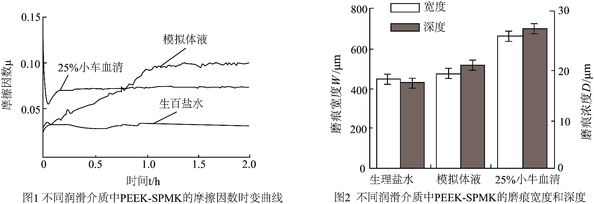
我国PEEK产业从打破国际技术垄断到实现自主可控，以中国方案定义了未来高端制造的新格局。
（原文作者高传豹、张欣悦等，有删改）
依据文章内容回答下列问题。
（1）聚醚醚酮（PEEK）复合材料性能具有_________、耐用性、精密性等特点。
（2）聚醚醚酮（PEEK）由_________种元素组成。
（3）判断下列说法是否正确（填“对”或“错”）。
①制约PEEK在骨科植入领域应用的原因是其耐磨性远逊于天然关节。__________
②我国PEEK产业打破了国际技术垄断。__________
（4）由图1和图2可得出“PEEK-SPMK在生理盐水中的摩擦学性能最好”的结论，其依据是_________。
【答案】（1）
轻量化 （2）
3（或三） （3） ①.
对 ②.
对 （4）
PEEK-SPMK在生理盐水中的摩擦因数最小，且磨痕宽度、深度均为最小
【解析】
【小问1详解】
根据题干第一段“人形机器人对材料的轻量化、耐用性、精密性等要求与聚醚醚酮（PEEK）复合材料的性能高度契合”可直接得到答案；
【小问2详解】
由PEEK的化学式
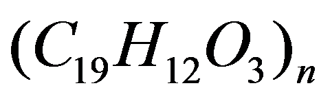
可知，其由碳、氢、氧三种元素组成；【小问3详解】
①原文明确说明“其耐磨性远逊于天然关节，制约了其在骨科植入领域的应用”，正确；
②原文最后一段提到“我国PEEK产业从打破国际技术垄断到实现自主可控”，正确；
【小问4详解】
摩擦因数越小、磨痕宽度和深度越小说明摩擦学性能越好；由图1可知生理盐水中摩擦因数最低，图2可知生理盐水中磨痕的宽度和深度都是最小的，因此该条件下摩擦学性能最好。
【基本实验及其原理分析】
28. 依据特定需求制取。
（1）选用下图装置，利用加热 制取。
制取。
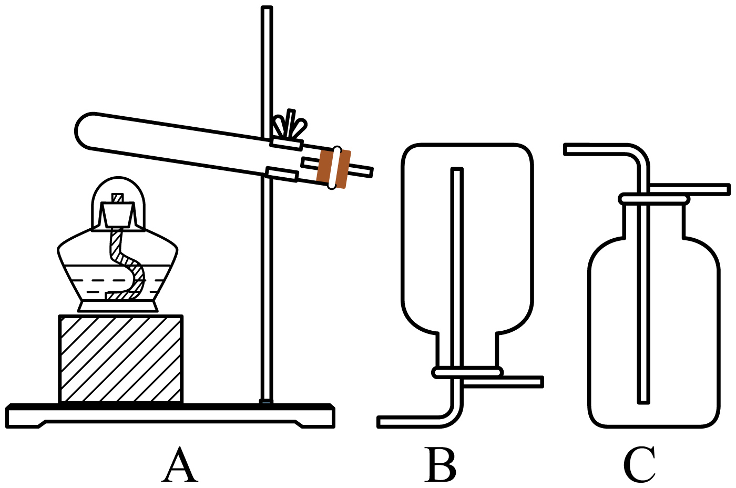
制取的化学方程式为__________，收集装置是__________（填序号）。
（2）用和溶液作制氧剂，矿泉水瓶、塑料吸管等材料制作简易供氧器。
①实践过程包括：a．动手制作b．设计方案c．测试优化，正确的顺序为__________（填序号）。
②依据如图便携式制氧机结构，同学们设计了下图所示的3种简易供氧器装置，其中设计合理的是__________（填“甲”“乙”或“丙”）。
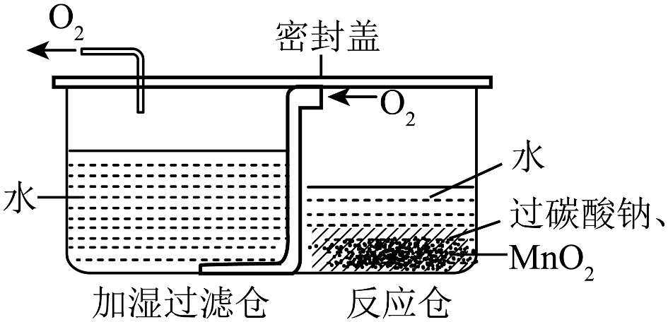
资料：过碳酸钠能与反应生成和。
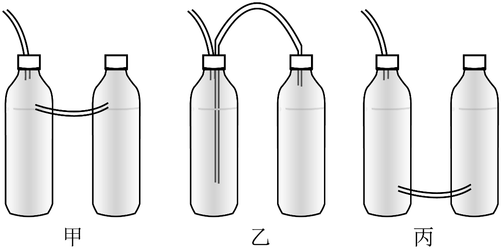
【答案】（1） ①.  ②. C
②. C
（2） ①.
bac ②.
乙
【解析】
【小问1详解】
高锰酸钾受热分解生成锰酸钾、二氧化锰和氧气，配平并标注反应条件、气体符号即可得到化学方程式；
氧气密度大于空气，因此用向上排空气法收集，对应装置C。
【小问2详解】
① 实践活动的逻辑顺序为：先设计方案，再动手制作，最后测试优化，故顺序为bac。
② 参考便携式制氧机原理：反应仓产生的氧气需要经过加湿仓的水加湿后，才能输出供人使用。乙装置中，右侧反应瓶产生的氧气通入左侧加湿瓶的水中，加湿后再从出气管输出，符合要求；甲无法让氧气经过水加湿，丙会导致两瓶液体互通，不能稳定输出氧气，因此选乙。
29. 利用下图实验验证可燃物燃烧的条件。实验中观察到A处火柴头燃烧。
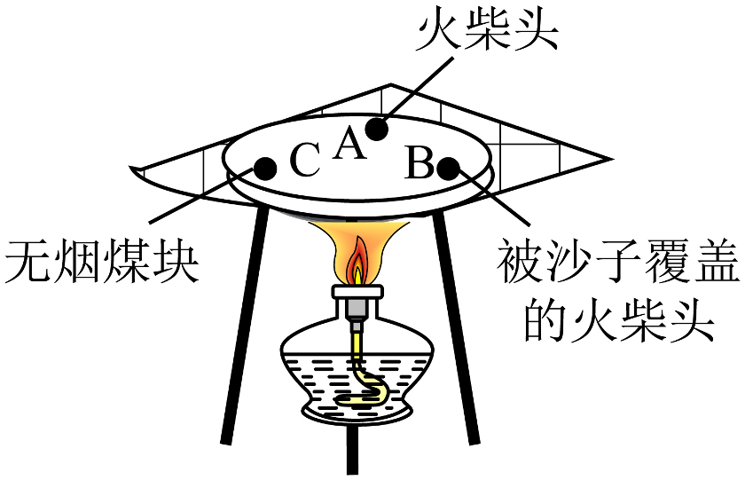
已知：无烟煤的着火点为550～700℃；实验加热过程中，陶土网中心温度约为442℃。
（1）设计A、C的目的是__________。
（2）B处火柴头未燃烧的原因是__________。
【答案】（1）
验证可燃物燃烧需要温度达到其着火点
（2）
被沙子覆盖，隔绝了氧气（或空气）
【解析】
【小问1详解】
A处火柴头、C处无烟煤块均属于可燃物，均与氧气接触，温度达到了火柴头的着火点，火柴头燃烧，未达到无烟煤块的着火点，无烟煤块不燃烧，说明燃烧需要温度达到可燃物的着火点，故目的是：验证可燃物燃烧需要温度达到其着火点；
【小问2详解】
B处火柴头是可燃物，温度达到了着火点，被沙子覆盖，隔绝了氧气（或空气），故不能燃烧。
30. 利用下图装置研究的性质（实验时均抽出玻璃片）。
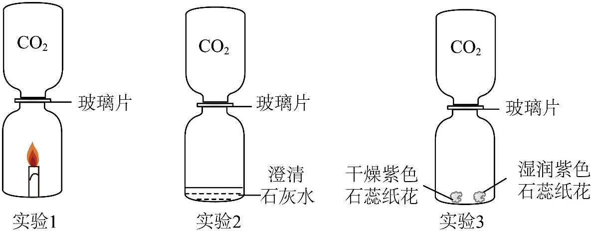
（1）实验1，观察到蜡烛立即熄灭，由此可得出具有的性质是密度比空气的大、__________。
（2）实验2，观察到澄清石灰水变浑浊，反应的化学方程式为__________。
（3）实验3，能证明与发生反应的现象是__________。
【答案】（1）
不燃烧、不支持燃烧 （2）
（3）
干燥紫色石蕊纸花不变色，湿润紫色石蕊纸花变红
【解析】
【小问1详解】
该实验中蜡烛熄灭，说明二氧化碳不燃烧、不支持燃烧，二氧化碳在上侧集气瓶中，下侧集气瓶中蜡烛立即熄灭，说明二氧化碳的密度比空气大，可下沉到蜡烛处，覆盖在蜡烛表面使其熄灭；
【小问2详解】
略；
【小问3详解】
该实验中干燥紫色石蕊纸花不变色，说明二氧化碳不能使石蕊变色，湿润紫色石蕊纸花变红，说明二氧化碳与水发生了反应。
31. 补全实验报告。
实验 | 1 | 2 | 3 |
目的 | 配制50 g溶质质量分数为__________的NaCl溶液 | 验证Fe的金属活动性比的强 | 验证浓盐酸的挥发性和酸性 |
操作 | 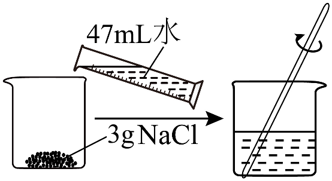 已知： | 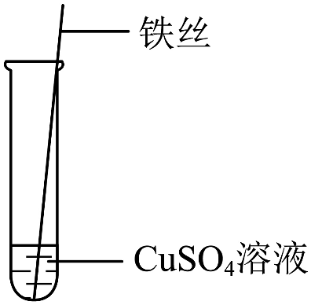 | 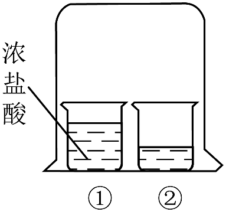 |
现象 | 固体全部溶解 | __________ | 一段时间后，观察到烧杯②中溶液由红色变为无色 |
（1）实验1，NaCl溶液中溶质的质量分数为__________。
（2）实验2，观察到的现象是__________。
（3）实验3，烧杯②中加入的试剂为__________。
【答案】（1）
6% （2）
铁丝表面析出红色固体，溶液由蓝色逐渐变为浅绿色
（3）
滴加了无色酚酞试液的氢氧化钠溶液（合理即可）
【解析】
【小问1详解】
溶质氯化钠的质量为3g，1g/cm3=1g/mL，则溶剂水的质量为：，固体全部溶解，则NaCl溶液中溶质的质量分数为：；
【小问2详解】
铁活动性强于铜，铁能与硫酸铜反应生成硫酸亚铁和铜，故现象是：铁丝表面析出红色固体，溶液由蓝色逐渐变为浅绿色；
【小问3详解】
烧杯②初始溶液为红色，一段时间后，观察到烧杯②中溶液由红色变为无色，说明烧杯②中加入的试剂可能是滴加了无色酚酞试液的氢氧化钠溶液，氢氧化钠溶液显碱性，能使无色酚酞试液变红，浓盐酸具有挥发性，挥发出的氯化氢分子不断运动，当运动到烧杯②中，氯化氢溶于水形成盐酸，氢氧化钠与盐酸反应生成氯化钠和水，氯化钠显中性，稀盐酸显酸性，均不能使无色酚酞试液变红，故溶液由红色变为无色。
【科学探究】
32. 兴趣小组同学对泡沫灭火器模拟实验的最佳反应条件进行探究。
【查阅资料】传统泡沫灭火器的主要成分是溶液和溶液，二者反应产生的可附着在可燃物表面；受热易分解，吸热。
【进行实验】17.2℃下，分别按下列①～⑧的配方进行实验，测定最大压强（装置如图）。
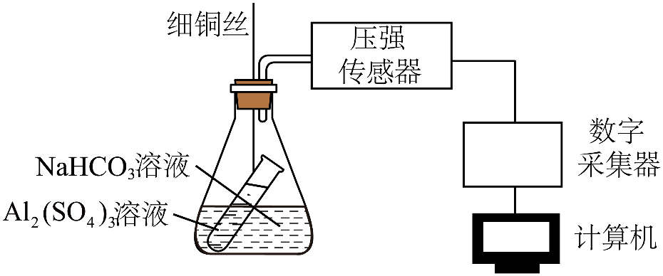
实验记录如下：
组别 | 第1组 | 第2组 |
实验序号 | ① | ② | ③ | ④ | ⑤ | ⑥ | ⑦ | ⑧ |
溶液中溶质的质量分数/% | 24.9 | 24.9 | 24.9 | 24.9 | 14.7 | 14.7 | 14.7 | 14.7 |
溶液中溶质的质量分数/% | 8.4 | 8.4 | 8.4 | 8.4 | 4.1 | 4.1 | 4.1 | 4.1 |
溶液体积 | 4 | 2.7 | 1.6 | 1.1 | 4 | 2.7 | 1.6 | 1.1 |
溶液体积 | 4 | 5.3 | 6.4 | 6.9 | 4 | 5.3 | 6.4 | 6.9 |
最大压强 | 155.5 | 179.6 | 146.2 | 122.3 | 128.8 | 143.3 | 119.2 | 110.7 |
【解释与结论】
（1）实验中，和发生化学反应。补全该反应的化学方程式： __________。
（2）第1组实验的目的是__________。
（3）上述实验中，泡沫灭火器模拟实验效果最佳的溶液、溶液中溶质的质量分数以及二者的体积比分别为__________。
（4）能得到“其他条件相同时，溶液、溶液中溶质的质量分数越大，泡沫灭火器模拟实验效果越好”的结论，依据的实验是__________（填实验序号）。
【反思与评价】
（5）泡沫灭火器产生的有利于灭火，原因是__________。
（6）兴趣小组同学利用塑料瓶设计了如图所示的简易灭火器，请简述使用时的操作：__________。
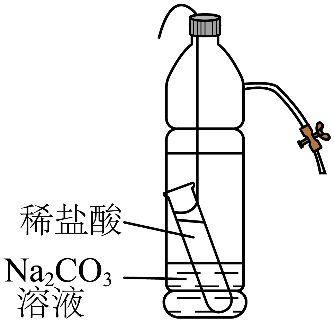
【答案】（1）6、3、6
（2）探究硫酸铝溶液和碳酸氢钠溶液的体积比对泡沫灭火器模拟实验效果的影响
（3）硫酸铝溶液的溶质质量分数为24.9%，碳酸氢钠溶液的溶质质量分数为8.4%，硫酸铝溶液和碳酸氢钠溶液的体积比为：2.7:5.3
（4）实验①⑤或实验②⑥或实验③⑦或实验④⑧
（5）氢氧化铝可附着在可燃物表面，隔绝氧气，同时氢氧化铝分解吸热，可降低温度至可燃物的着火点以下，达到灭火的目的
（6）将塑料瓶倒置，使稀盐酸与碳酸钠溶液混合接触发生反应，产生大量二氧化碳气体，瓶内压强变大，喷出泡沫
【解析】
【小问1详解】
根据质量守恒定律，化学反应前后原子的种类和数目不变，反应物中含3个硫酸根离子，则生成物中也应含3个硫酸根离子，则硫酸钠的系数为3，生成物中含6个Na，则反应物中也应含6个Na，则碳酸氢钠的系数为6，反应物中含6个C，则生成物中也应含6个C，则二氧化碳的系数为6；
【小问2详解】
由表可知，第1组实验中硫酸铝溶液和碳酸氢钠溶液的体积比不同，其他因素相同，故目的是：探究硫酸铝溶液和碳酸氢钠溶液的体积比对泡沫灭火器模拟实验效果的影响；
【小问3详解】
由表中数据可知，实验②的压强最大，说明生成的二氧化碳最多，灭火效果最好，故最佳的溶液、溶液中溶质的质量分数以及二者的体积比分别为：硫酸铝溶液的溶质质量分数为24.9%，碳酸氢钠溶液的溶质质量分数为8.4%，硫酸铝溶液和碳酸氢钠溶液的体积比为：2.7:5.3；
【小问4详解】
实验①⑤或实验②⑥或实验③⑦或实验④⑧中均是硫酸铝溶液和碳酸氢钠溶液的溶质质量分数不同，其他因素相同，且相同条件下，溶液、溶液中溶质的质量分数越大，压强越大，均可得出“其他条件相同时，溶液、溶液中溶质的质量分数越大，泡沫灭火器模拟实验效果越好”的结论；
【小问5详解】
见答案；
【小问6详解】
见答案。